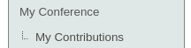
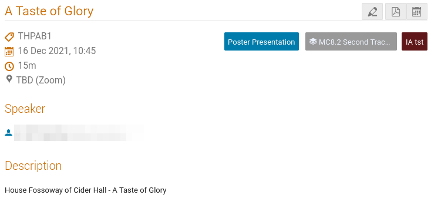
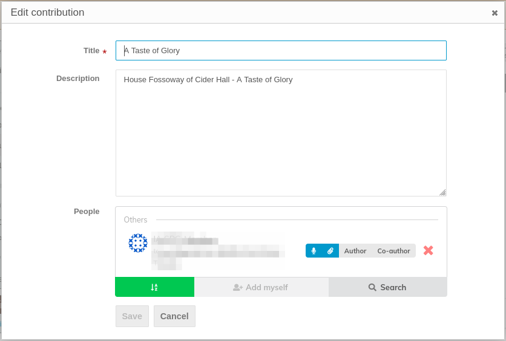

How to edit a contribution
Abstracts that have been accepted by the Scientific Programme Committee become contributions. These are allocated in the Scientific Programme in sessions, which means they have a room, date and time of presentation, duration and programme code.
All contributions submitted to the conference are available under the "Contribution list" menu item of Indico.
To quickly get to your contributions, which means all contributions you have submitted or are allowed to edit (because you are the speaker, for example) enter the "My Contributions" menu entry:

which brings to the list of your contributions. By clicking on their title you can get its details:

Please consider the three buttons on the top right. With these it is possible to:
-
edit the contribution (pencil button)
-
export the contribution to PDF
-
insert the contribution in your digital calendar by way of a CalDAV link or iCalendar file
Editing the contribution details
After clicking on the pencil button it is possible to edit the contribution details.

In particular:
-
Title: this should reflect the title that will be written in the paper or the proceedings, using Sentence case. Title of Oral Presentations should not be modified without getting the permission by the Scientific Secretariat, so please check with them whenever a change is needed;
-
Description: this is the abstract for the contribution. Please use text-only material (i.e., no MarkDown, no HTML, no LaTeX, ...) and avoid copying and pasting from word processors which could introduce badly printing symbols;
-
List of authors/speakers (People): we recommend to use the "Author" type for the corresponding/first author and "Co-author" for all the others. The order is not important ans since it will be adjusted automatically when creating the proceedings. Be sure that only one person is marked as "Speaker" (for posters this will be "presenter"). To perform this action click on the "Speaker" icon to the right of the name

It is very important to check who is the speaker (for orals) or presenter (for posters): this person needs to have the "microphone button" highlighted.
Those authors that will also have the "paper clip" button highlighted will be considered submitters: they will be able to modify the contribution and upload files for presentation/proceedings.
Whenever you would need to add co-authors which do not have a JACoW profile, please follow the instructions about how to create JACoW profiles for new authors
Refer to the instructions on how to create an abstract if you need more details on the contribution fields.